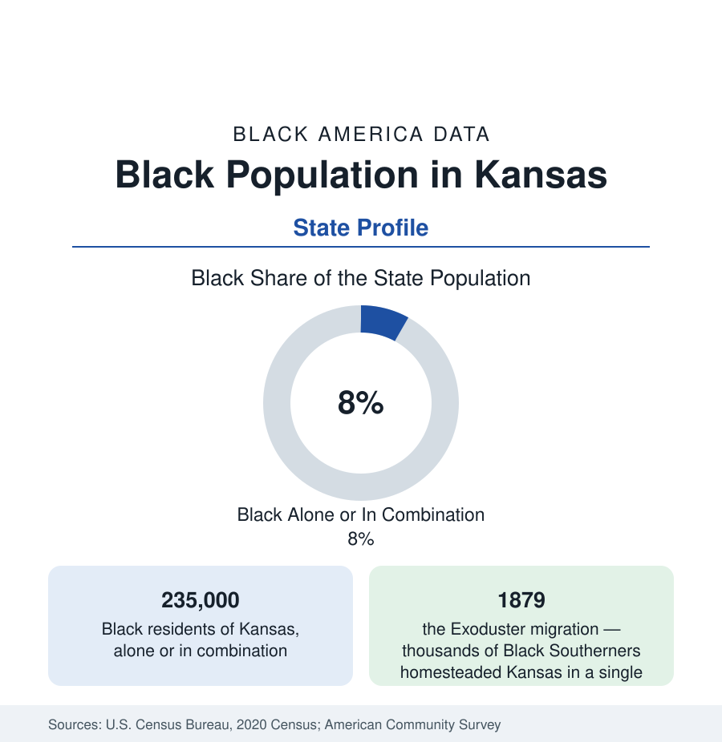

Black Census
Black Population in Kansas: Exodusters to the Air Capital
About 235,000 Black Kansans — one in twelve residents — from the Exoduster towns of 1879 to Wichita and Kansas City. The census profile.

Kansas holds about 235,000 Black residents — Black alone or in combination — roughly one in twelve of its people, with Black alone at about 168,000, or 5.7 percent. Kansas occupies a singular place in Black America's founding geography: the territory whose own status ignited the national crisis over slavery, and the destination of the Exodusters, the first great organized Black migration of the post-emancipation era. The modern population centers on Wichita, Kansas City (Kansas), and Topeka, over a rural layer with roots in 1879.
The Exoduster Foundation
In 1879, thousands of Black families left Louisiana, Mississippi, and Texas for Kansas in a movement organized around the promise of homestead land and self-governing towns — the Exodusters, named for the biblical exodus. Nicodemus, founded in 1877 in the northwestern plains, is the movement's surviving monument: the only Exoduster town that persists, now a National Historic Site, its population in the dozens and its significance in the national record. Dozens of Black settlements and farm colonies followed across the state, and the migration seeded Black Kansas in every region — the farm towns of the east, Topeka's Tennessee Town (named for its migrants' origin), and the railroad and packinghouse districts of the cities. The state's Black population share peaked in the territorial generation's aftermath and has run in the mid-single digits through the modern censuses — a small share with a foundational story.
The Cities: Wichita, KCK, Topeka
Wichita, the state's largest city, is roughly a ninth to an eighth Black — some 45,000 to 50,000 residents — its community built by the aircraft industry's war-era and postwar labor demand (the 'Air Capital's' plants) and centered in the northeast districts around McAdams Park. Kansas City, Kansas, profiled with its metro in the cities section, holds the state's deepest community (roughly a fifth to a quarter of the city, with the Quindaro freedom-era roots) as part of the bi-state metro. Topeka, the capital, is roughly a sixth to a fifth Black — the state-government and railroad community whose school case, Brown v. Board of Education, decided from its segregated Monroe School, is the most consequential place-name in the education section's entire data history; the school is now a National Historical Park site. Lawrence (the university town) and the Fort Riley–Fort Leavenworth military corridor (Junction City records one of the state's highest Black shares on the Army posts' population) complete the map.
Composition and Indicators
Black Kansas's indicators sit at the plains pattern: incomes below the national Black figure, homeownership comparatively strong in the smaller cities, attainment anchored by the state's universities and by Washburn in Topeka, health outcomes in the state's middling-to-difficult band. The state has no HBCU. The composition remains predominantly native-born and rooted — the Exoduster-descended families of the farm counties are among the longest-continuously-resident Black populations in the West — with growing African immigrant communities in Wichita and the Kansas City suburbs. The estimates show slow growth concentrated in Wyandotte and Sedgwick counties and the Johnson County suburbs (where the Black population, though a small share, is among the fastest-growing in the state in absolute terms), against slow decline in the farm counties.
Reading the Kansas Numbers
The Military and Meatpacking Corridors
Two modern corridors complete the map. The military belt — Fort Leavenworth (the Army's staff-college post, whose officer population gives Leavenworth a distinctive Black professional presence), Fort Riley at Junction City (whose adjoining city records Black shares in the range of a fifth, among the state's highest), and McConnell Air Force Base at Wichita — sustains communities of service families whose data (incomes, education, mobility) differ from every other layer of Black Kansas. The meatpacking southwest — Dodge City, Garden City, Liberal — has added a newer layer since the 1980s: plant workforces in which Black and African workers (including Sudanese and Somali communities) form a growing share of towns whose Black populations have multiplied from near zero within living memory, the Kansas instance of the plains packing pattern described in the Nebraska and Iowa profiles.
Kansas is the profile where a small population carries an outsized share of the national story: the territory that started the argument, the migration that prefigured the Great Migration by forty years, and the schoolhouse that ended legal segregation. The 235,000 in these tables live in the state those events made — and the census data record them, appropriately, in Topeka first.
More in Black Census
The Black Population of the United States: Size, Definitions, and Distribution
The Black population of the United States totals 52.8 million — 15.4 percent of the nation. How the Census Bureau defines and counts the population, and where it lives.
Black Median Household Income in the United States
Black median household income stands at $56,490 in the Census Bureau's annual income report — how the figure is measured, how it compares, and what drives it.
The Black Poverty Rate: Levels, Children, and the Long Trend
The official Black poverty rate is 17.1 percent — against 11.1 percent nationally and 7.7 percent for non-Hispanic White Americans. How poverty is measured and what the data show.
Source: U.S. Census Bureau, 2020 Census; American Community Survey; Population Estimates Program.